EXISTING SCREENS → SHARED RULES
지금의 Spotlog를
다음 화면의 기준으로.
홈부터 상세·편집·팝업까지, 현재 화면의 모양과 역할을 함께 기록했습니다. 저장 화면 하나를 기준으로 삼거나 모든 버튼을 같은 크기로 바꾸지 않습니다.
이 문서는 현재 로컬 구현의 디자인 기준입니다. 미공개 기능은 참고 캡처로만 포함되며, 실제 서비스 기능을 함께 배포한 것은 아닙니다.
01 · FOUNDATION
전 화면이 공유하는 기준
새 수치를 정한 것이 아니라, 기존 화면에서 반복되는 값을 추출했습니다.
밝은 화면 + 사진 중심
미색 배경, 흰색 내용 카드, 짙은 검정의 핵심 행동. 코랄은 포인트·저장 상태에 사용합니다. 영상과 사진 피드는 전체 화면 위에 글과 버튼을 겹칩니다.
같은 역할, 같은 형태
일반 목록·긴 여행기·편집 도구의 글자 크기를 구분합니다. 같은 장소라도 발견 카드, 여행기 안의 카드, 저장 목록 카드는 서로 다른 구성입니다.
현재 화면이 우선
승인된 화면 → 최종 적용 CSS → 가이드 → 공통 부품 순서로 판단합니다. 가이드나 부품 기본값이 다르면 화면 대신 가이드를 정정합니다.
#171716
#f8f8f6
#ffffff
#777773
#e9e9e5
#ff5a3d
글자 — 크기보다 사용 위치를 먼저 선택
제목: Manrope 선언 · 본문: DM Sans, Pretendard 및 시스템 대체 서체. 한글은 실제 기기에 설치된 지원 서체로 표시될 수 있습니다. 임의의 새 글꼴을 추가하지 않습니다.
| 역할 | 현재 규격 | 사용 위치 |
|---|---|---|
| 일반 화면 제목 | 28px · 750 · 줄높이 1.25 | 여행기·내 여행·저장. 프로필은 28px/700/1.1 별도. |
| 홈 소개 / 추천 커버 | 29px/1.28 · 추천 커버 24px/1.25 | 홈의 큰 소개 문장과 이미지 위 일정 제목. |
| 여행기 상세 표지 | clamp(30px, 8vw, 36px) · 700 · 1.2 | 320px→30px, 390px→31.2px, 460px→36px. |
| 영상 표지 | clamp(30px, 8vw, 36px) · 750 · 1.25 | 상세와 크기 범위는 같지만 굵기·줄높이를 구분. |
| 사진 피드 제목 | clamp(26px, 7.2vw, 31px) · 750 · 1.2 | 사진 쇼츠. 영상 제목과 동일 수치로 바꾸지 않음. |
| 섹션 / DAY 제목 | 일반 섹션 20~22px · DAY 25px/1.3 | 지역·글 묶음, 여행 날짜별 제목. 해당 클래스 확인. |
| 큰 장소 카드 / 저장 카드 제목 | 지역 안내 21px · 상세 안 20px · 저장 17px | 표현 위치에 따라 사진·글 밀도도 다름. |
| 긴 여행기 / 편집 본문 | 16px · 줄높이 1.7~1.8 | 읽는 글은 카드 소개 11~14px와 구분. |
| 메타·분류 | 일반 메타 11~12px · 영문 분류 8~10px | 분류용 소문자를 본문·설명·입력에 확대 적용하지 않음. |
레이아웃·여백
- 서비스 화면 최대 너비 460px, 최소 320px, 넓은 화면 중앙 배치.
- 일반 목록 좌우 18px. 여행기 소개와 팝업은 20px.
- 홈 섹션 간 30px, 일반 카드 목록 14~15px, 저장 묶음 12px.
- 카드 안쪽: 홈 가로 카드 10px, 저장 카드 14px, 큰 카드 16px.
- 영상·사진·여행기 표지에는 일반 목록의 바깥 여백을 넣지 않음.
이동·상태
- 기본 메뉴: 홈·여행기·장소·내 여행·저장. 프로필은 별도 진입.
- 상세 뒤로가기는 상단과 고정 DAY줄 안에 존재. 고정 제목줄을 더 늘리지 않음.
- 상세·편집 하단 행동은 고정. 마지막 내용까지 가려지지 않는 여백 유지.
- 코랄 북마크는 저장 여부, 녹색 DAY는 여행에 담긴 상태.
- 선택·미선택·처리 중·빈 목록·실패를 화면별로 확인.
02 · SCREEN ATLAS
전체 화면과 구성 기준
탐색 → 저장 → 여행 → 작성·프로필까지. 빈 상태·스크롤·팝업도 포함합니다.
홈
편집된 추천 일정과 여행자의 이야기를 발견하는 시작 화면.
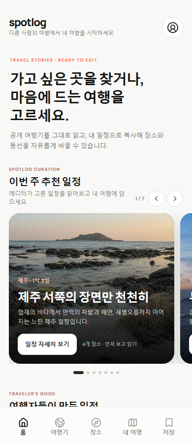
원본 크기로 보기소개 → 추천 일정 → 여행자 일정. 작은 점·다음 카드 노출로 가로 탐색을 안내.
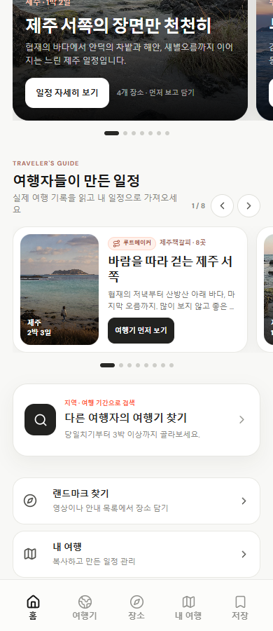
원본 크기로 보기홈 아래의 가로 카드와 여행기 찾기. 위 추천 커버와 다른 카드 유형.
- 홈 소개는 29px, 섹션 제목은 20px. 긴 소개는 줄 수에 맞게 자연스럽게 늘어남.
- 추천 일정은 높이306px·R24 이미지 커버, 여행자 일정은 사진 폭112px의 가로 카드. 두 형태를 유지.
- 검색 유도 카드는 기존 아래 위치와 롤링 점 위아래 간격을 유지. 새 기능을 상단에 계속 쌓지 않음.
원본: App.tsx Home · styles.css .home-* / .promoted-* / .rolling-*
여행기·검색
지역·여행 기간을 선택하고, 먼저 읽은 뒤 내 여행에 담는 목록.
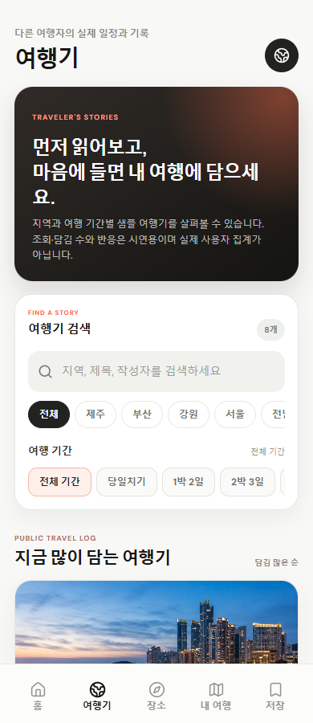
원본 크기로 보기어두운 소개 카드, 검색, 지역·기간 선택.
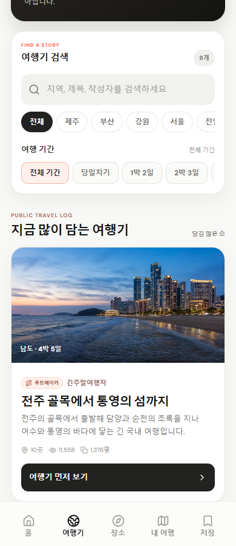
원본 크기로 보기사진 → 작성자·기간 → 제목·설명 → 읽기 버튼.
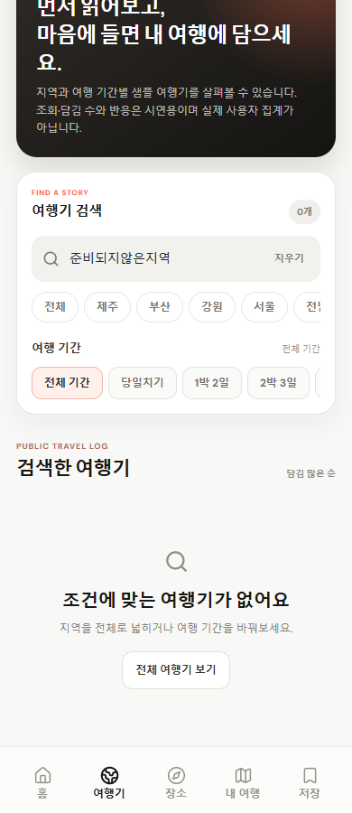
원본 크기로 보기안내 문구와 조건 초기화 행동. 빈 영역을 가짜 콘텐츠로 채우지 않음.
- 검색51px·R14·14px, 지역 칩34px·캡슐, 기간 칩36px·R11. 선택 표현을 구분.
- 여행기 카드 사진190px·R21·본문16px, 제목20px·설명13px·행동46px.
- 결과가 없을 때 최소280px 안내 영역과 42px 재탐색 버튼을 유지.
원본: App.tsx Community · styles.css .community-* / .destination-* / .duration-*
장소·지역 안내
지역을 옆으로 고르고, 큰 사진과 안내를 읽으며 장소를 저장하는 화면.
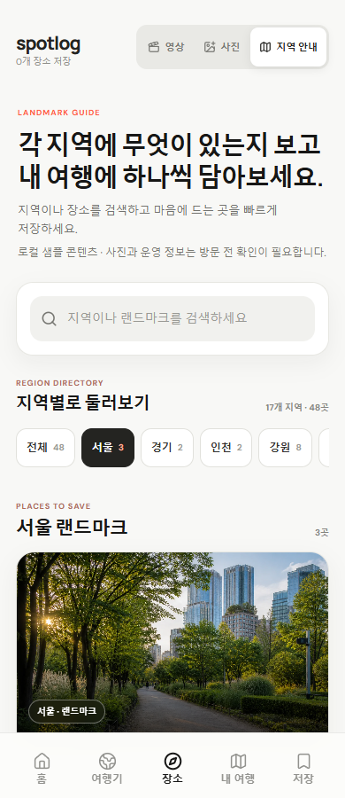
원본 크기로 보기장소 보기 전환과 검색·지역 탐색.
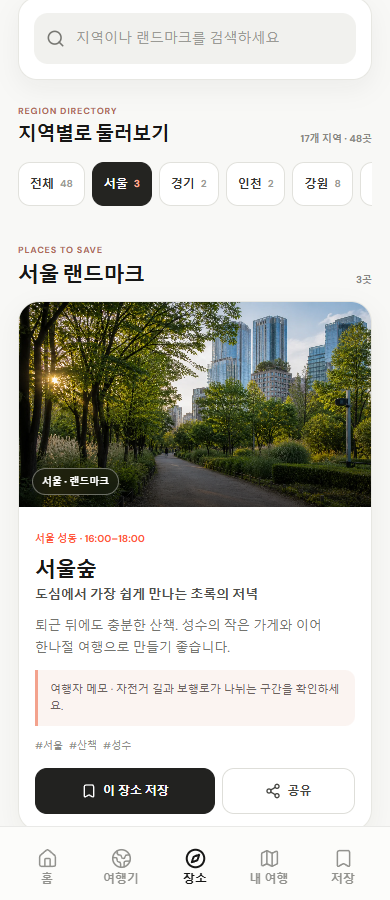
원본 크기로 보기지역 칩 가로 이동, 큰 사진·안내·저장/공유.
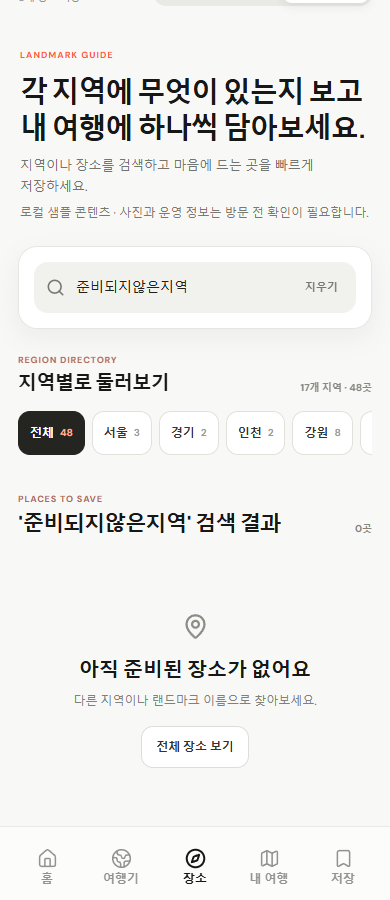
원본 크기로 보기검색 조건에 맞는 장소가 없는 상태.
- 일반 내용 좌우18px. 현재 보기 전환44px·R9·11px. 지역 버튼은44px·R12.
- 장소 카드 사진205px·제목21px·설명13px·46px 행동. 저장 목록의 작은 카드로 바꾸지 않음.
- 지역은 가로 스크롤, 장소는 세로 목록. 자동 불러오기와 선택 표시를 유지.
원본: App.tsx Discover · LandmarkGuideCard.tsx · styles.css .landmark-guide-* · phase-one.css .phase-region-*
장소·영상과 사진
영상과 사진은 전체 화면형 발견 흐름. 이미지·영상 위에 장소와 저장 행동을 겹침.
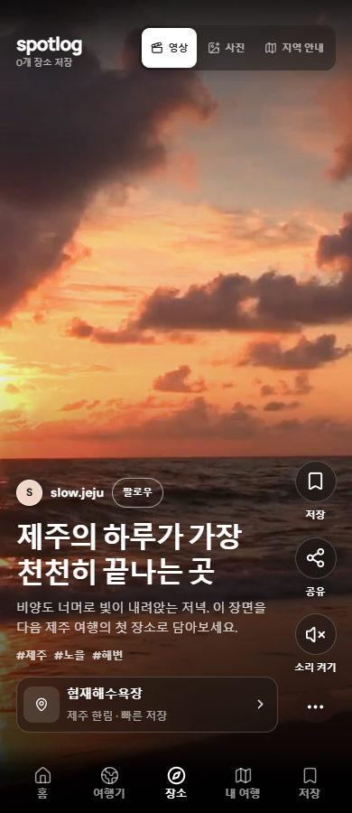
원본 크기로 보기세로로 다음 장소. 영상 위 제목·지역·행동.
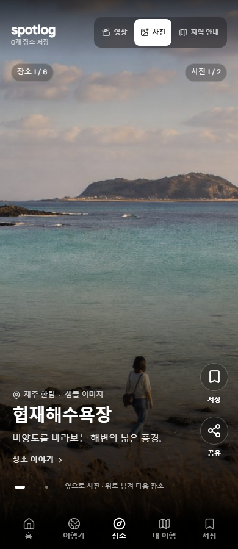
원본 크기로 보기세로는 다음 랜드마크, 가로는 같은 장소의 사진.
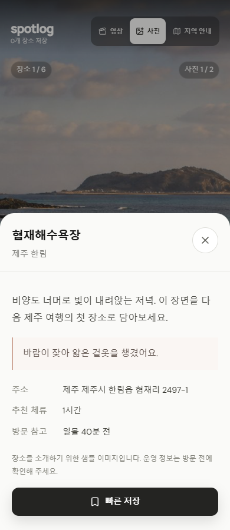
원본 크기로 보기피드를 떠나지 않고 긴 설명을 읽는 현재 팝업.
- 전체 화면 사진/영상에 일반 흰색 카드의 여백·테두리를 씌우지 않음.
- 영상 제목30~36px/1.25, 사진 제목26~31px/1.2. 설명과 버튼이 사진을 과도하게 덮지 않음.
- 우측 동작46px 원형·라벨11px, 사진 점의 시각 크기와 누르는 영역44px를 구분.
- 사진 이야기 본문16px/1.8. 현재 로컬 사진 기능은 공개 영상 화면 교체 승인과 별개.
원본: App.tsx Discover · PhotoLandmarkFeed.tsx · styles.css discovery rules · photo-landmark-feed.css
저장
현재 복원된 저장 목록. 전체 가이드 중 하나의 화면 유형이며 다른 화면의 디자인을 대신하지 않음.
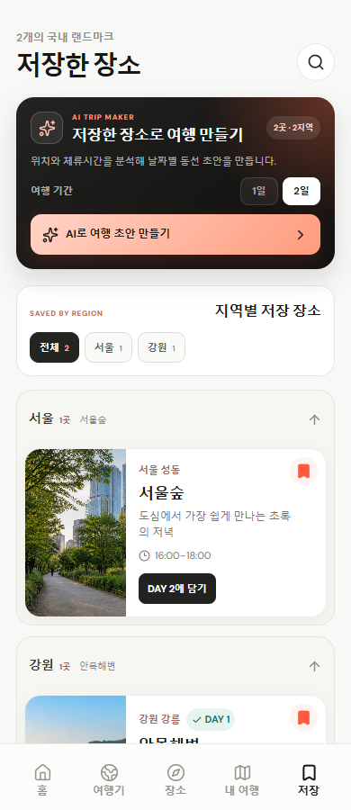
원본 크기로 보기기존 AI 카드·지역별 목록·작은 가로 장소 카드.
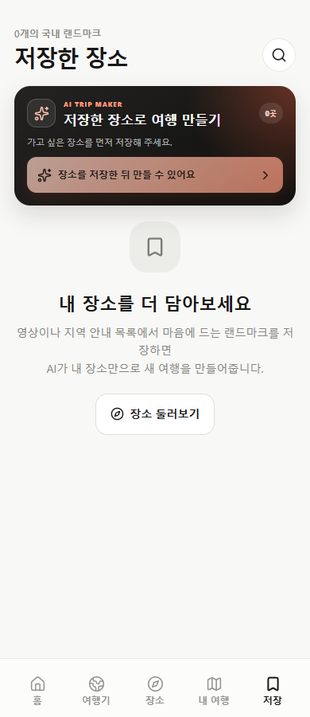
원본 크기로 보기샘플 링크 제거. 저장 장소 없으면 AI 생성 비활성.
- GitHub81a1085의 저장 디자인을 유지하고 사용자 요청에 따라 샘플 링크·샘플 생성만 제거한 상태.
- AI 카드 안쪽16px·R20·제목17px·설명11px. 기간 선택31px·생성45px.
- 카드 사진 폭112px·최소176px·R18. 제목17px, 설명12px, 메타·DAY11px.
- 담기 버튼은 안쪽8px10px·R8. 코랄 북마크와 녹색 DAY 상태를 따로 표현.
원본: App.tsx Saved / SavedPlaceCard · styles.css .saved-* / .ai-trip-* / .add-to-trip
내 여행·새 여행
여행을 모아 보고 생성하는 화면. 수정은 생성한 여행 안에서 이어짐.
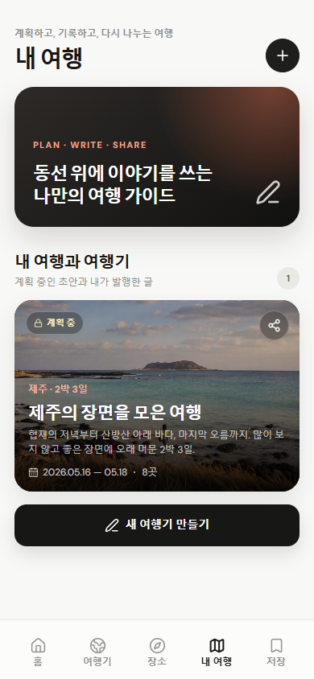
원본 크기로 보기안내 카드·여행 표지·상태·공유.
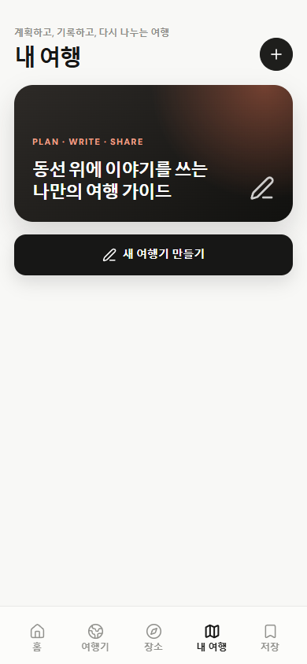
원본 크기로 보기만들기 행동으로 연결되는 안내.
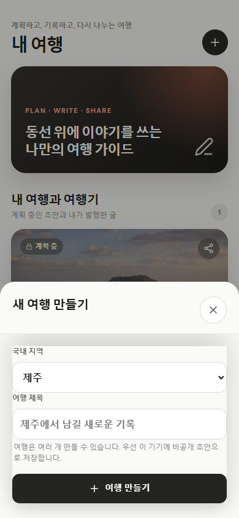
원본 크기로 보기지역·여행 이름을 짧게 입력. 큰 별도 페이지를 덧붙이지 않음.
- 소개 카드 최소174px·R24·안쪽23px. 여행 사진 카드는 높이238px·R22.
- 목록 제목28px, 여행 표지 제목21px/1.3, 설명12px/1.5.
- 새 여행 팝업의 현재 라벨12px·입력16px/50px/R12. 범용 부품 라벨14px를 덮어쓰지 않음.
원본: App.tsx Trips / CreateJourneySheet · BottomSheet.tsx · styles.css .trips-* / .journey-card · phase-one.css
여행기 상세·DAY·지도
공개 여행기와 내 여행 상세의 읽기 구조는 공유하고, 하단 행동은 소유 여부에 따라 구분.
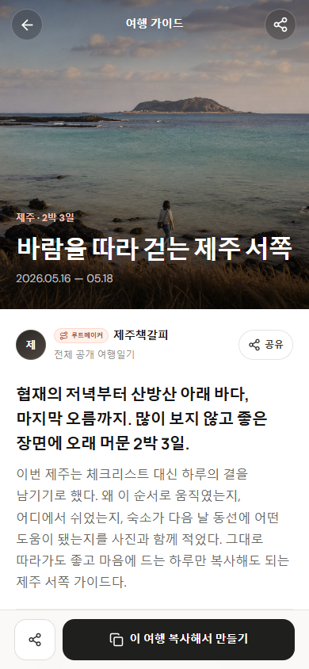
원본 크기로 보기표지·작성자·글. 하단은 내 여행으로 담는 행동.
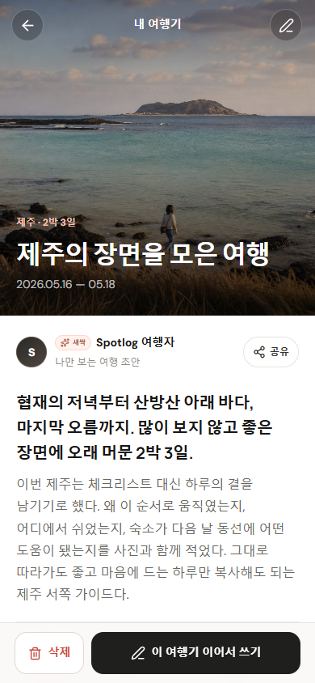
원본 크기로 보기같은 읽기 구조. 내 여행의 수정·관리 행동.
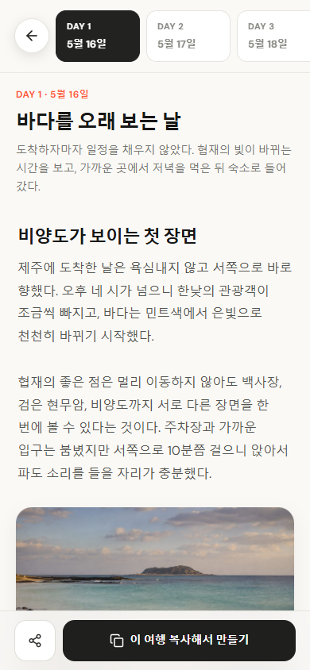
원본 크기로 보기같은 줄 안에 뒤로가기. 상단에 별도 고정 제목줄을 더하지 않음.
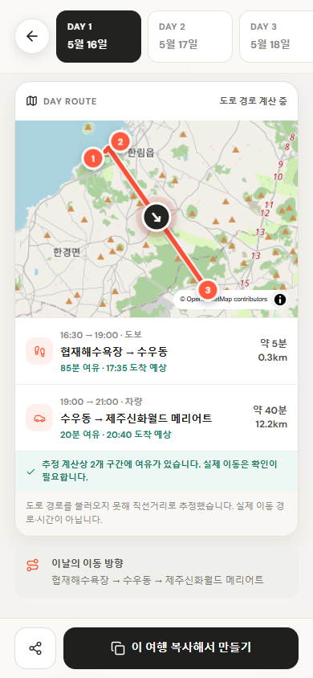
원본 크기로 보기현재 조회/대체 표시를 포함한 화면. 실제 도로 경로 검증 완료 예시가 아님.
- 표지 높이390px, 제목clamp(30px,8vw,36px). 본문16px/1.7~1.8.
- DAY줄 위 고정·안쪽13px18px·간격8px. 날짜 폭106px·R13, 뒤로44px 원형.
- 본문 장소 카드는R20·사진205px·제목20px·설명14px·메모13px·행동44px.
- 하단 행동은52px·14px·R15, 좌우18px. 지도 출처·주의 상태와 끝부분 여백을 보존.
원본: App.tsx JourneyDetail / RouteMap · styles.css .journal-* / .day-* / .guide-place-* / .detail-footer
여행기 반응·작성자
여행기 아래에서 반응을 남기고, 작성자의 다른 여행기로 이어지는 기존 영역.
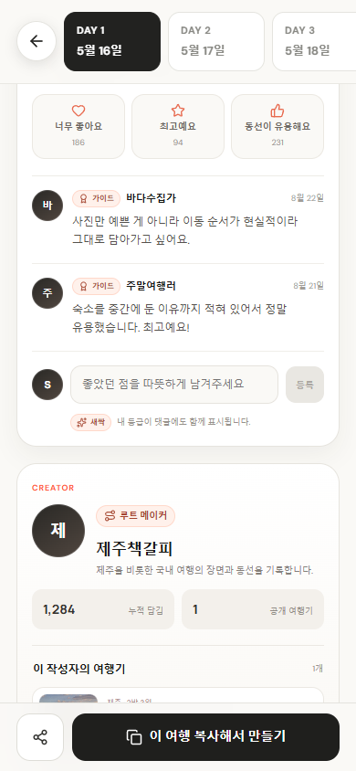
원본 크기로 보기여행기 하단의 기존 반응과 댓글 작성 영역.
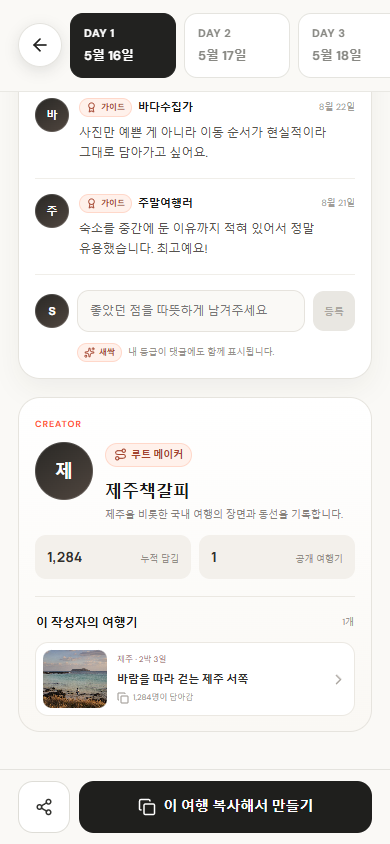
원본 크기로 보기아이콘·등급·작성자 소개와 다른 여행기 연결.
- 기존 하단 패널R22·안쪽19px16px16px·제목20px. 프로필 아이콘의 사용 위치별 크기를 유지.
- 현재 여행기 단위 댓글과 향후 장소별 스레드는 구분. 없는 기능을 기존 기준에 섞지 않음.
- 캡처는 로컬 검수 데이터. 실제 다중 사용자 집계·운영 완료처럼 설명하지 않음.
원본: App.tsx JourneyDetail · styles.css .creator-* / .journey-social / .comment-*
여행기 편집·장소 삽입
날짜·글·사진·장소를 편집하는 작업 화면. 읽기 화면보다 도구가 많아도 기존 밀도와 본문 크기를 유지.
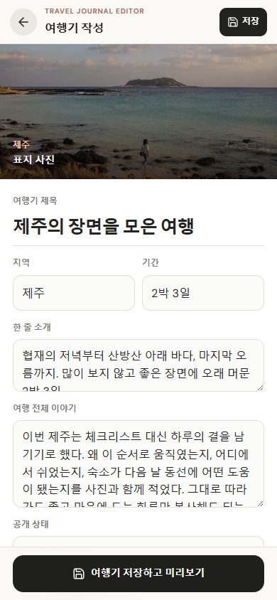
원본 크기로 보기상단 저장, 표지, 제목, 날짜, 고정 DAY줄.
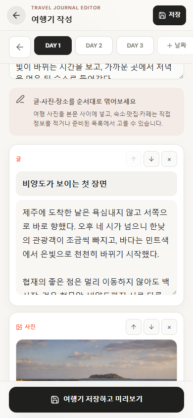
원본 크기로 보기본문16px. 블록 순서·삭제 도구와 고정 하단 저장.
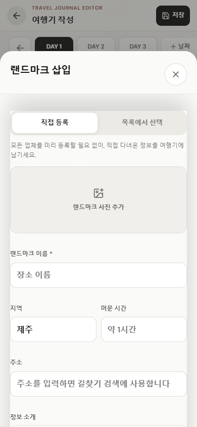
원본 크기로 보기기본 직접 등록 탭. 목록에서 선택 탭도 제공.
- 상단바62px·제목16px·저장40px/R10/12px, 하단 저장52px. 사용 위치를 구분.
- 제목 입력25px·밑줄형, 일반 입력50px·16px·R12. 글이 길다고 입력 글씨를 줄이지 않음.
- 글·사진 블록R17·안쪽13px, 도구32px. 장소 미리보기 사진92px.
- 장소 팝업은 현재 BottomSheet 안에 배치. 외부R24·최대88dvh·본문좌우20px, 내부 모서리와 패딩은0. 과거 단독 팝업 규칙을 적용하지 않음.
원본: App.tsx JourneyEditor / PlacePicker · styles.css .editor-* / .block-* / .place-picker
프로필·설정
사용자 카드·활동 수치·등급·알림을 보는 기존 설정 구조. 프로필은 하단 기본 메뉴 밖에 위치.
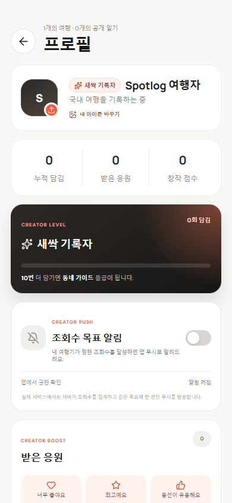
원본 크기로 보기사용자 카드·활동 수치·설정 진입.
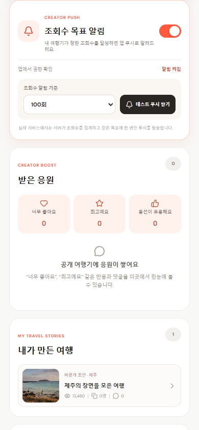
원본 크기로 보기사용자 활동 및 수신 관련 옵션.
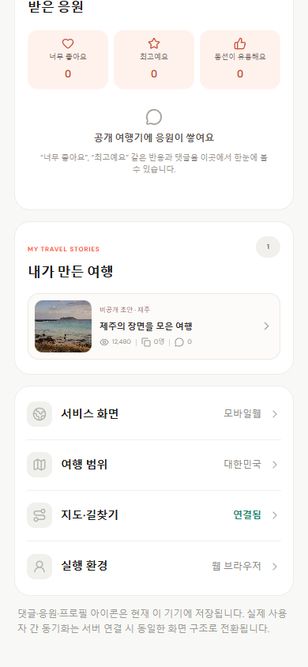
원본 크기로 보기아이콘+제목+현재 값이 반복되는 행.
- 프로필 제목28px/700/1.1. 일반 화면28px/750/1.25와 다르므로 일괄 덮어쓰지 않음.
- 프로필카드R20·안쪽16px·이름18px, 수치카드숫자20px·라벨12px.
- 설정행 최소64px·주제14px/600. 설정 값과 보조 안내는 위계를 유지.
- 아이콘 변경은 OS 파일 선택기를 열며 별도 프로필 편집 팝업은 현재 없음.
원본: App.tsx Profile · styles.css .profile-* / .creator-* / .notification-* / .settings-*
데이터 안내·백업 팝업
저장 실패 시 현재 기록을 보호하고 백업·복원을 안내하는 기존 보조 화면.
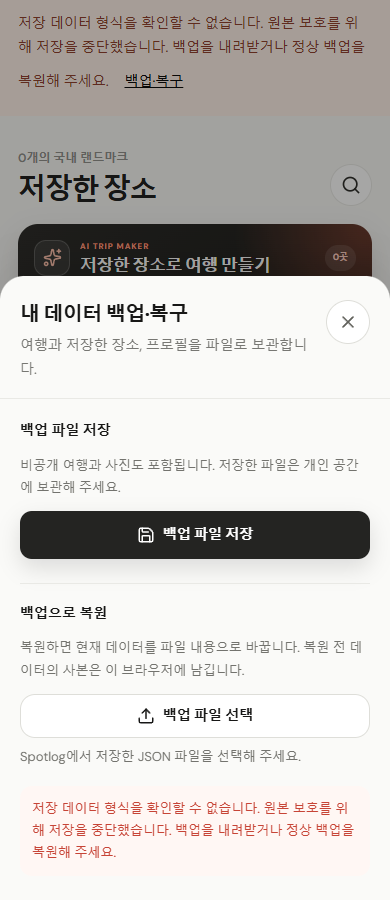
원본 크기로 보기분리된 검수 데이터로 오류 상태 재현. 사용자 저장소는 변경하지 않음.
- 현재 저장 오류 경고의 백업·복구 버튼에서 진입. 정상 저장 화면에 새 진입 버튼을 만들지 않음.
- 기존 BottomSheet의 제목·설명·닫기·본문 구조를 재사용. 내보내기와 복원 설명·행동을 구분.
- 실제 파일 업로드와 복원은 수행하지 않고 현재 입력·오류 표현만 확인. OS 확인창은 앱 내부 화면과 별도.
원본: App.tsx storageIssue / storagePanel · BottomSheet.tsx · ui.tsx FileUpload · theme.css / phase-one.css
분리된 실험 화면
기존 로컬 실험의 존재를 기록하되, 승인된 공통 디자인이나 공개 메뉴로 취급하지 않음.
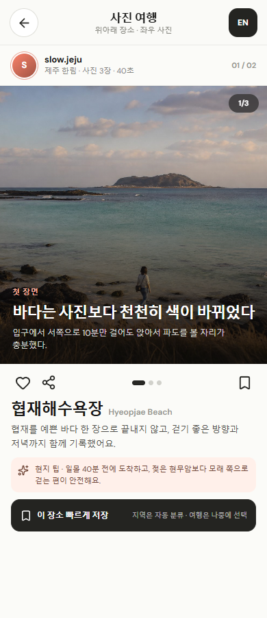
원본 크기로 보기별도 로컬 경로의 시안. 현재 사진 쇼츠와 구분.
- 실험용 구성이나 철회된 보관함/저장 화면을 새로운 기본 디자인의 근거로 삼지 않음.
- 사진 쇼츠 화면은 위 장소·영상과 사진 항목의 현재 구현을 참조. 배포는 별도 승인 필요.
원본: App.tsx PhotoStoryPreview · PhotoPlaceCard.tsx · photo-places.css · #photo-stories
03 · COMPONENT ROLES
어떤 부품을 가져다 쓸 것인가
수치가 조금 다르다고 평균 내지 않습니다. 사용 위치가 같은 부품부터 재사용합니다.
버튼·선택·아이콘
| 기존 역할 | 현재 규격 | 쓰는 곳 / 유지할 차이 |
|---|---|---|
| 핵심 행동 / 상세 하단 | 최소 52px · R15 · 14px/700 | 새 여행기 만들기, 저장 후 미리보기, 상세 복사. |
| 홈 추천 커버 | 최소 43px · R12 · 12px/800 | 사진 위 흰색 일정 상세 보기. |
| 홈 여행자 가로 카드 | 최소 37px · R10 · 10px/700 | 작은 카드 안 행동. 일반 주 버튼과 구분. |
| 여행기 목록 카드 | 최소 46px · R12 · 13px/800 | 여행기 목록의 일정 읽기. |
| 지역 안내 장소 카드 | 최소 46px · R12 · 12px/800 | 이 장소 저장 / 공유. |
| 상세 안 장소 카드 | 최소 44px · R11 · 13px/700 | 길찾기 / 공유. 지역 안내 버튼과 역할 구분. |
| 저장 카드 DAY 담기 | 안쪽 8px 10px · R8 · 11px/700 | 높이 약 34.69px. 고정 44px나 52px로 늘리지 않음. |
| 저장 AI 생성 | 최소 45px · R12 · 12px/800 | 피치 그라데이션. 저장 장소 없으면 비활성. |
| 저장 AI 기간 / 지역 | 기간 최소 31px/R9 · 지역 34px/R10 | 11px. 기간과 DAY 담기 의미를 혼동하지 않음. |
| 검색 지역 / 여행 기간 | 지역 34px/캡슐 · 기간 36px/R11 | 12px. 저장의 작은 지역 칩과 별도. |
| 장소 보기 / 지역 탐색 | 보기 44px/R9/11px · 지역 44px/R12 | 현재 phase-one 국소 규칙까지 적용한 값. |
| 상단 검색 / DAY 뒤로 | 검색 42px 원형 · DAY 44px 원형 | 검색 위치와 스크롤 중 빠져나가는 위치 구별. |
| 영상·사진 동작 | 46px 원형 · 라벨 11px | 이미지 위 반투명 버튼. 일반 흰색 화면과 구분. |
| 편집 상단 저장 / 도구 | 저장 40px/R10/12px · 블록 도구 32px | 장문의 편집 화면에서 역할·밀도를 유지. |
| 현재 하단 팝업 행동 | 실측 약 47.8px · R12 · 14px | 최소 높이+안쪽 여백의 결과. 모든 .primary가 52px인 것은 아님. |
사진 카드·정보 카드
| 기존 역할 | 사진·모서리·안쪽 | 글자·용도 |
|---|---|---|
| 홈 추천 일정 | 커버 306px · R24 · 글 영역 18px | 제목 24px · 소개 12px. 사진·그라데이션·가로 롤링. |
| 홈 여행자 일정 | 최소 180px · 사진 폭112px · R20 · 안쪽10px | 제목 17px · 소개 11px. 작은 가로 사진 카드. |
| 여행기 목록 | 사진 높이190px · R21 · 본문16px | 제목 20px · 소개 13px. 작성자·기간·장소 수. |
| 지역 안내 장소 | 사진 높이205px · R21 · 본문16px | 제목 21px · 소개 13px. 발견 후 저장/공유. |
| 저장 목록 장소 | 최소 176px · 사진 폭112px · R18 · 본문14px | 제목 17px · 소개 12px · 메타11px. 북마크+DAY 상태. |
| 내 여행 | 커버 높이238px · R22 · 표지 오버레이 | 제목 21px · 소개 12px. 상태·기간·공유. |
| 여행기 본문 장소 | 사진 높이205px · R20 · 본문16px | 제목 20px · 소개14px · 메모13px. 길찾기/공유. |
| 편집 글·사진 블록 | R17 · 안쪽13px · 도구32px | 본문16px/1.75. 순서·삭제·사진·장소 연결 유지. |
| 프로필 / 통계 / 설정 | R20 · 프로필16px · 통계18px 8px | 이름18px, 숫자20px, 라벨12px. 설정 행 최소64px. |
입력·팝업·피드백
| 기존 역할 | 현재 규격 | 적용 원칙 |
|---|---|---|
| 검색 입력 | 최소 51px · R14 · 14px | 여행기·장소 탐색의 검색. 편집 입력과 구분. |
| 편집 일반 입력 | 50px · R12 · 16px | 제목은 별도 25px·밑줄형. 본문은 16px/1.75. |
| 새 여행 팝업 입력 | 라벨 12px · 입력 16px/50px/R12 | 범용 Field 라벨 14px와 실제 사용 위치의 차이를 유지. |
| 현재 BottomSheet | 상단 R24 · 최대 88dvh · 좌우 20px | 제목 20px/1.4 · 설명 14px. 내부 스크롤·닫기·뒤로가기·포커스 처리 재사용. |
| 장소 삽입 팝업 | 외부 R24 · 최대 88dvh · 본문 좌우 20px | 직접 등록 / 목록에서 선택. 현재 BottomSheet 안에 삽입하며 내부 모서리·패딩은 0. |
| 토스트·저장 경고 | 기존 .toast / .local-storage-warning | 성공은 짧게 알림. 실패에는 다시 시도할 행동 제공. 결과 없이 성공을 표시하지 않음. |
| 사진·파일 선택 | 프로필 OS 파일 선택기 / 현재 FileUpload | 브라우저·OS 기본 창과 앱 내부 디자인을 구분. 없는 프로필 편집 팝업을 가정하지 않음. |
지역 안내 목록이라면 큰 사진의 장소 카드, 여행기 본문이라면 여행기 내부 장소 카드, 저장 목록이라면 작은 가로 저장 카드를 사용합니다. 음식점이라는 이유로 새로운 버튼·서체·카드를 만들지 않습니다.
04 · MAINTENANCE
다음 작업에서도 지킬 기준
가이드는 실제 화면을 따라 갱신하고, 제품 디자인 변경은 별도 요청으로 구분합니다.
- 사용 위치 확인 새 기능이 어느 화면·카드·행동에 해당하는지 결정.
- 가장 가까운 원본 재사용 현재 클래스·컴포넌트의 최종 적용 수치 확인. 공통 부품 기본값으로 덮어쓰지 않음.
- 상태와 작은 화면 확인 320·390·460px, 긴 글, 빈 목록, 선택·해제, 하단 고정 영역을 확인.
- 전후 비교 후 기록 의도하지 않은 디자인 변화를 비교. 새 시각 유형은 별도 승인 후 추가.
확인한 범위
홈·여행기 검색·지역 안내·영상·사진·저장·내 여행·공개/내 여행 상세·DAY·지도·댓글·작성자·편집·프로필·설정·팝업·빈 목록을 현재 코드와 분리된 테스트 데이터로 확인했습니다.
320/390/460px 실제 표시값을 기준으로 기록합니다. 이미지 속 여행·수치는 검수용 데이터이며 실제 사용자 성과가 아닙니다.
아직 바꾸지 않은 것
상세에서 특정 섹션으로 바로 스크롤하면 고정 DAY줄에 제목 일부가 가려질 수 있습니다. 지도에는 조회 중·대체 경로 상태가 포함됩니다. 이번 가이드 작업에서 기능을 수정하지 않았습니다.
기존 사진 실험은 별도 분류했습니다. 철회된 저장/보관함 시안과 공통 부품의 임의 기본값은 기준으로 사용하지 않습니다.
기준일 2026.09.10 · 현재 구현 화면과 검수용 데이터 기준 · 실제 사용자 성과·정식 운영 기능과 구분함 · 서비스 화면의 디자인과 기능은 이 문서 게시로 변경하지 않음.